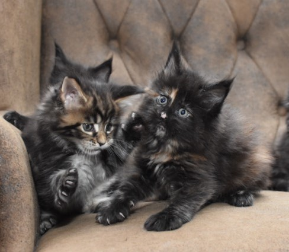
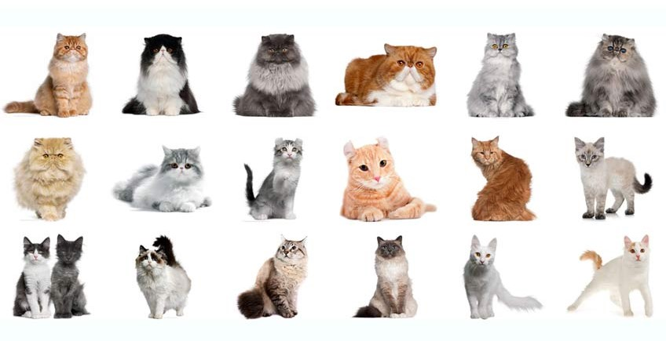
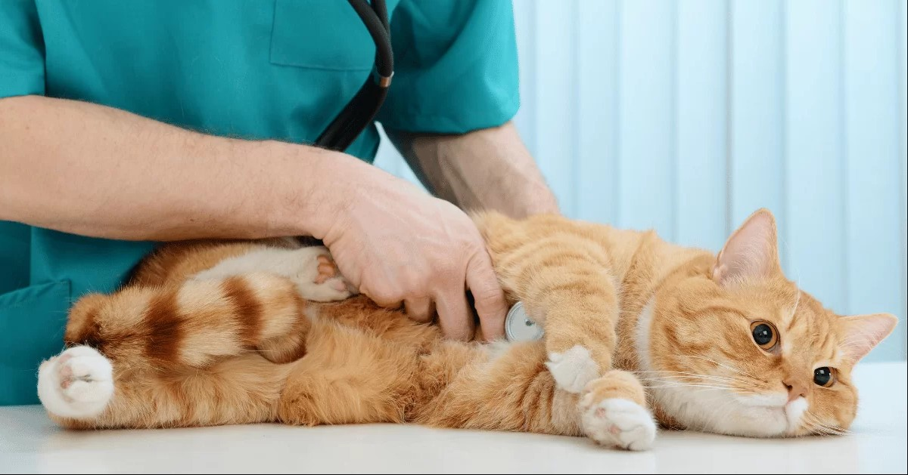

O hodowli kotów
Celem hodowli kotów rasowych jest rozmnażanie kotów różnych ras i wariantów kolorystycznych, oparte na naukowych podstawach, dążących do osiągnięcia najwyższego poziomu pod względem eksterierowym, zdrowotnym oraz behawioralnym, jak również szeroka popularyzacja kotów rasowych wśród społeczeństwa.
Rasy kotów
Rasy kotów są niezwykle zróżnicowane, każda z nich charakteryzuje się unikalnymi cechami, takimi jak wielkość, kształt ciała, długość sierści i temperament. Przykładowo, Maine Coon to rasa o dużych rozmiarach i długiej sierści, natomiast Syjamski to rasa o krótkiej sierści i wyrazistych niebieskich oczach.
Żywienie kotów
Dieta kota powinna być zrównoważona i dostosowana do jego wieku, stanu zdrowia i stylu życia. Koty są zwierzętami mięsożernymi, więc ich dieta powinna zawierać wysoki procent białka.

Zdrowie kotów
Regularne wizyty u weterynarza są kluczowe dla utrzymania zdrowia kota. Ważne jest, aby koty były regularnie szczepione i odrobaczane, a także aby monitorować wszelkie zmiany w ich zachowaniu, które mogą wskazywać na problemy zdrowotne.
